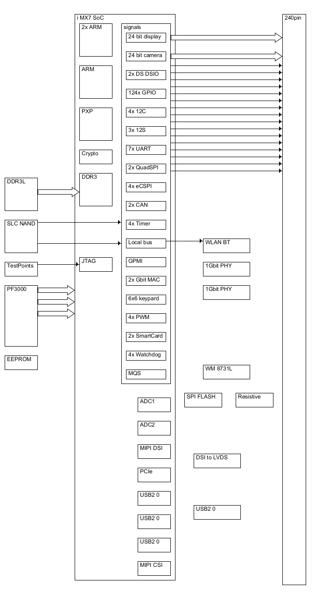

@startwire
goto(0,360)
*DDR3L [70x70]
*SLC_NAND [70x70]
*TestPoints [70x30]
*PF3000 [70x130]
*EEPROM [70x30]
--
move(60,0)
*i_MX7_SoC
*2x_ARM [70x70]
*ARM [70x70]
*PXP [70x70]
*Crypto [70x30]
*DDR3 [70x70]
move(0,90)
*JTAG [70x30]
--
*signals
*24_bit_display [85x20]
*24_bit_camera [85x20]
*2x_DS_DSIO [85x20]
*124x_GPIO [85x20]
*4x_12C [85x20]
*3x_12S [85x20]
*7x_UART [85x20]
*2x_QuadSPI [85x20]
*4x_eCSPI [85x20]
*2x_CAN [85x20]
*4x_Timer [85x20]
*Local_bus [85x20]
*GPMI [85x20]
*2x_Gbit_MAC [85x20]
*6x6_keypard [85x20]
*4x_PWM [85x20]
*2x_SmartCard [85x20]
*4x_Watchdog [85x20]
*MQS [85x20]
move(35,10)
*ADC1 [70x30]
*ADC2 [70x30]
*MIPI_DSI [70x30]
*PCIe [70x30]
*USB2_0 [70x30]
*USB2_0_ [70x30]
*USB2_0__ [70x30]
*MIPI_CSI [70x30]
--
move(40, 480)
*WLAN_BT [100x30]
*1Gbit_PHY [100x30]
*1Gbit_PHY_ [100x30]
move(0, 120)
*WM_8731L [100x30]
move(-40, 10)
*SPI_FLASH [80x30]
move(110, -50)
*Resistive [80x30]
move(-90, 80)
*DSI_to_LVDS [100x30]
move(0,60)
*USB2_0 [100x30]
--
*240pin [50x1220]
DDR3L(100%,50%-10) => i_MX7_SoC.DDR3
SLC_NAND -> i_MX7_SoC.signals
SLC_NAND(100%, 50) -> i_MX7_SoC.signals
TestPoints -> i_MX7_SoC.JTAG
PF3000 => i_MX7_SoC
PF3000 => i_MX7_SoC
PF3000 => i_MX7_SoC
i_MX7_SoC.signals(100%,25) => 240pin
i_MX7_SoC.signals(100%,65) => 240pin
i_MX7_SoC.signals -> 240pin
i_MX7_SoC.signals -> 240pin
i_MX7_SoC.signals -> 240pin
i_MX7_SoC.signals -> 240pin
i_MX7_SoC.signals -> 240pin
i_MX7_SoC.signals -> 240pin
i_MX7_SoC.signals -> 240pin
i_MX7_SoC.signals -> 240pin
i_MX7_SoC.signals -> 240pin
i_MX7_SoC.signals -> 240pin
i_MX7_SoC.signals -> 240pin
i_MX7_SoC.signals -> 240pin
i_MX7_SoC.signals -> 240pin
i_MX7_SoC.signals -> 240pin
i_MX7_SoC.signals -> 240pin
i_MX7_SoC.signals -> 240pin
i_MX7_SoC.signals.Local_bus -> WLAN_BT
@endwire